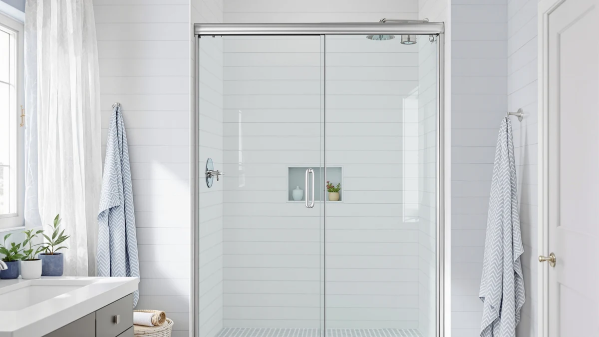

Quick Answer
If you are planning a shower door installation and want one door that fits most standard openings, the GroGro 56-60 inch sliding door is the strongest overall pick, with a wide adjustable range and tall glass panels for walk-in showers. We compared seven sliding, pivot, corner and accessory options by published specs, current pricing and verified owner reviews to help you match a door to your exact opening.
Our pick: GroGro 56-60" W x 71" — $493.90 Check Price on Amazon
Bottom line: our top pick is the GroGro 56-60" W x 71" H Semi-Frameless Pivot Swing Glass at $493.90. The best budget option is the AmazerBath 3 PCS Shower Door Bottom Seal for 3/8" at $8.99.
Things to Know Before You Buy
- Measure your rough opening at the top, middle and bottom before you start a shower door installation. The doors in this guide cover widths from 24 inches to 60 inches, and using anything but your smallest measurement can leave a gap or force a return.
- Sliding doors need wall space on either side of the track, while pivot doors swing open and need floor clearance in front of the stall instead.
- Every door here uses tempered safety glass, but frame material and hardware finish vary, and the least expensive picks tend to use lighter-gauge aluminum.
- A corner enclosure fits stalls with two adjoining walls, so measure both walls and the depth of your stall, not just the front opening width.
- Budget doors under $250 rarely include soft-close hinges or a lifetime warranty, so check the return window before you drill into tile or cut a threshold.
Shower door installation only goes smoothly when the door you order actually matches your opening, your wall type and the space you have to swing or slide it open. Get the width wrong by even half an inch and you are looking at a return, a gap that leaks, or a track that never sits flush against the wall.
We compared seven shower door options across sliding, pivot and corner styles, plus one bottom seal kit for owners fixing a leak instead of replacing a whole door. Our top pick, the GroGro 56-60 inch sliding door, covers one of the widest ranges in this guide and works for most large walk-in showers without custom glass. If your opening runs narrower, or your stall is a corner rather than a straight wall, one of the other six picks below is likely the better fit.
Prices here run from under $10 for a replacement bottom seal to nearly $600 for a full frameless corner enclosure, and size explains only part of that gap. Wider sliding doors need heavier glass and longer track hardware, pivot doors trade some width for a swinging hinge that suits tighter bathrooms, and a corner enclosure demands two properly squared walls before it will fit at all. We built this guide from manufacturer specifications, current Amazon pricing and patterns in verified owner reviews so you can weigh those tradeoffs before you buy.
Why You Should Trust Us
This guide to shower door installation is written and maintained by Ilane Tall, who covers bathroom fixtures and home renovation buying decisions for Best Shower Doors. We do not keep a warehouse of shower doors or run a physical testing lab, and we say so plainly. Every pick here comes from manufacturer specifications, current Amazon pricing and patterns we find across verified owner reviews for each product. When a listing shows a recurring complaint, a leaking seal or a track that binds, we note it in the review instead of leaving it out. We recheck prices and availability on a regular basis so the numbers you see reflect what a door costs today, not what it cost when we first published this guide.
How We Picked
We started with shower doors and one door-sealing accessory available through Amazon that cover the range of openings homeowners actually deal with during a shower door installation project, from 24 inch half-bath stalls to 60 inch walk-in showers. Every full-size door needed tempered safety glass and a documented width range, since vague dimensions cause more returns than any other spec on this type of product. We also prioritized listings with a real base of verified reviews over newly listed doors with only a handful of ratings, and made sure the final list covered the layouts shoppers commonly face: wide and narrow sliding doors, pivot doors for tighter stalls, a corner enclosure for angled walls, and a low-cost seal kit for anyone patching a leak instead of replacing the whole unit.
How We Compared
To rank these picks, we compared each product against its published specifications: glass thickness where listed, frame material, the stated width and height range, and price relative to the size of opening it covers. We cross-checked those numbers against current Amazon listings to confirm pricing had not drifted since the specs were first published, and we read through verified owner reviews looking for recurring themes, such as hardware loosening over time, glass arriving scratched, or installation instructions that buyers found confusing. Doors with a consistent pattern of complaints about leaking seals or missing hardware were weighted down relative to doors where owners reported a straightforward shower door installation and no major issues months later. We did not physically install or handle any of these products ourselves. We built this comparison from published data and verified buyer feedback, and say so directly instead of implying otherwise.
Our Picks

GroGro 56-60" W x 71"
What we like
- Covers one of the widest adjustable ranges in this guide, 56 to 60 inches
- 71 inch panel height suits showers with taller ceilings
- Tempered glass panels meet standard safety glazing requirements
Flaws but not dealbreakers
- At $493.90 it costs more than the narrower doors in this comparison
- Wide bypass panels are heavy enough that two people should handle the install
| Material | — |
| Size | 56 - 60" W x 71" H |
The GroGro 56-60 inch door targets large walk-in showers where a standard 44 to 48 inch door would leave a gap on either side. Its bypass sliding panels run on a track built for openings between 56 and 60 inches wide and 71 inches tall, which covers most modern walk-in stalls without ordering custom glass.
At $493.90 it is the second most expensive pick in this guide, and that price tracks with the larger glass panels and longer track hardware a 60 inch opening requires. Homeowners researching shower door installation for oversized stalls often find this width range hard to source at all, which is why we point most shoppers with a wide opening toward this door first.

GroGro 44-48" W x 71"
What we like
- Fits the most common US alcove shower width, 44 to 48 inches
- Shares the same 71 inch tall glass and hardware design as the wider GroGro model
- Costs $94 less than its 56-60 inch sibling
Flaws but not dealbreakers
- Will not stretch to cover openings wider than 48 inches
- Reviewers note the track needs occasional cleaning to keep panels sliding smoothly
| Material | — |
| Size | 44 - 48" W x 71" H |
This GroGro door is the narrower version of our top pick, built for the 44 to 48 inch openings found in most standard US alcove showers. It uses the same bypass sliding mechanism and 71 inch glass height, just scaled down to a more common width range.
At $399.90 it undercuts the wider GroGro by nearly $100, which makes sense given the smaller glass panels and shorter track. If your shower door installation involves a typical alcove opening rather than an oversized walk-in, this size is the more practical and less expensive match.

56-60" W x 71" H
What we like
- Covers openings up to 60 inches wide with a pivot hinge instead of a track
- 71 inch height matches the taller panels used across this guide's wider doors
- Comes in nearly $25 cheaper than the equivalent GroGro sliding door
Flaws but not dealbreakers
- A pivot door this wide needs more floor clearance to swing open than a sliding door needs
- Fewer verified reviews than the GroGro models, so the ownership record is thinner
| Material | — |
| Size | Pivot 60" W x 71" H |
Royal Guard's 56-60 inch door takes a different approach than the sliding GroGro models above: it swings open on a pivot hinge rather than gliding along a track. That works well if your bathroom layout has room in front of the stall for the door to swing, but not much wall space on either side for a track to overlap.
At $469.99 it lands between the two GroGro sizes in price, and the 71 inch height keeps it consistent with the other wide doors in this comparison. Anyone planning a shower door installation in a stall with limited side clearance but open floor space in front should look at this pivot option before defaulting to a sliding door.

38-42"W x 71"H Pivot Swing
What we like
- Fits a common mid-range opening width that many sliding doors skip over
- Pivot hinge needs less side wall space than a sliding track
- Priced under $320, below most of the wider pivot doors in this guide
Flaws but not dealbreakers
- At 71 inches tall, it will not suit stalls with lower ceiling clearance
- Verified reviews mention the hinge tension can loosen with heavy daily use
| Material | — |
| Size | 42''W x 71''H |
The Ctlumh pivot door fills a width range that a lot of sliding doors in this guide skip: 38 to 42 inches. That size shows up often in older homes and half-renovated bathrooms where the opening was never widened to the modern 44 to 48 inch standard.
At $319.99 it sits in the middle of this roundup's price range, and the pivot mechanism means you need floor space for the door to swing rather than wall space for a track. A few verified owners report the hinge tension loosening after months of daily use, which is worth checking under warranty if your door starts drifting open on its own.

Royal Guard 24-25.4" W x
What we like
- Fits openings as narrow as 24 inches, tighter than anything else in this comparison
- Lowest price among the full-size doors in this guide at $209.99
- Pivot hinge suits small stalls where a track would not fit
Flaws but not dealbreakers
- The narrow width rules it out for any standard 44 inch or wider opening
- Reviewers describe the frame as lighter-duty than the wider pivot doors above
| Material | — |
| Size | Pivot,24"Wx72"H |
Royal Guard's narrowest door covers openings between 24 and 25.4 inches, the tightest range of any product in this guide. That size turns up in small guest bathrooms, half-bath conversions and older homes built before 44 inch openings became standard.
At $209.99 it is also the least expensive full-size door here, though the narrow frame trades some rigidity for that price, and verified reviews describe the aluminum as noticeably lighter than the wider pivot doors above. If your shower door installation involves a genuinely small stall, options this narrow are hard to find at this price.

ComfyStyle Frameless Corner Shower Enclosure
What we like
- Frameless glass design fits corner stalls a straight sliding or pivot door cannot cover
- 34 inch depth accommodates a two-wall corner layout, not just a single straight wall
- 72 inch height is the tallest in this guide, suited to walk-in corner showers
Flaws but not dealbreakers
- At $599.99 it is the most expensive product in this roundup
- The corner-specific shape means it cannot be reused if you switch to a straight-wall stall later
| Material | — |
| Size | 44-48"W x 34"D x 72"H |
Most of the doors in this guide are built for a single straight opening, but the ComfyStyle enclosure is designed specifically for corner stalls, the kind with two adjoining walls meeting at an angle. Its 44 to 48 inch width per side and 34 inch depth line up with common corner shower layouts rather than a single rectangular opening.
At $599.99 it costs more than any other pick here, which tracks with the frameless glass panels and hardware needed to seal a two-wall enclosure instead of one straight track. Because the frame is shaped for a corner, measure both walls and the stall depth carefully before ordering. A shower door installation in a corner layout has fewer options than a standard alcove, and this is one of the more complete frameless choices at that width.

AmazerBath 3 PCS Shower Door
What we like
- Costs under $10, far less than replacing an entire door
- Segmented 3-piece design allows it to bend around a curved or uneven threshold
- A practical add-on for anyone finishing a shower door installation and noticing a gap at the bottom
Flaws but not dealbreakers
- It only addresses the bottom seal, not a cracked panel or worn track
- Listed dimensions are limited, so measure your existing door's bottom edge before ordering
| Material | — |
| Size | Bottom - 3-Section Segmented |
Not every shower door problem calls for a full replacement. The AmazerBath kit is a segmented, three-piece bottom seal built to close the gap under an existing door rather than replace it outright, which makes it one of the cheapest fixes in this guide at under $10.
If you already finished a shower door installation and noticed water creeping out at floor level, a worn or missing bottom seal is a common cause, and this segmented design is built to flex around a threshold that is not perfectly flat. It will not fix a cracked glass panel or a track that has come loose, but for a leaking gap at the bottom of the door, it is a low-cost first step before you consider replacing the whole unit.
Quick Comparison
A quick side-by-side for comparing price and fit before your shower door installation.
| Product | Material | Price | Rating | Best for | Get it |
|---|---|---|---|---|---|
| GroGro 56-60" W x 71" | — | $493.90 | 4 | 56-60 in. wide openings | View on Amazon → |
| GroGro 44-48" W x 71" | — | $399.90 | 4 | 44-48 in. standard alcove | View on Amazon → |
| 56-60" W x 71" H | — | $469.99 | 4 | Up to 60 in., pivot swing | View on Amazon → |
| 38-42"W x 71"H Pivot Swing | — | $319.99 | 4 | 38-42 in., pivot swing | View on Amazon → |
| Royal Guard 24-25.4" W x | — | $209.99 | 4 | 24-25.4 in., compact stalls | View on Amazon → |
| ComfyStyle Frameless Corner Shower Enclosure | — | $599.99 | 4 | 44-48 in. corner stalls | View on Amazon → |
| AmazerBath 3 PCS Shower Door | — | $8.99 | 4 | Bottom seal, any door | View on Amazon → |
The Competition
We also looked at several framed aluminum sliding doors priced under $150 that did not make this guide because their listings lacked a clear width range, a detail that affects returns more than almost any other spec in a shower door installation. A couple of frameless doors closer to the $500 mark were set aside too; their glass and hardware specs were comparable to the picks above, but they carry a much smaller base of verified reviews, which made it harder to confirm how they hold up past the first few months. We passed on a handful of corner and pivot doors outside the width ranges covered here as well, since they target less common stall dimensions than what most shoppers researching shower door installation actually need. For most people weighing a shower door installation, the GroGro 56-60 inch door remains our top pick, with the other six covering the openings, layouts and repairs it does not.